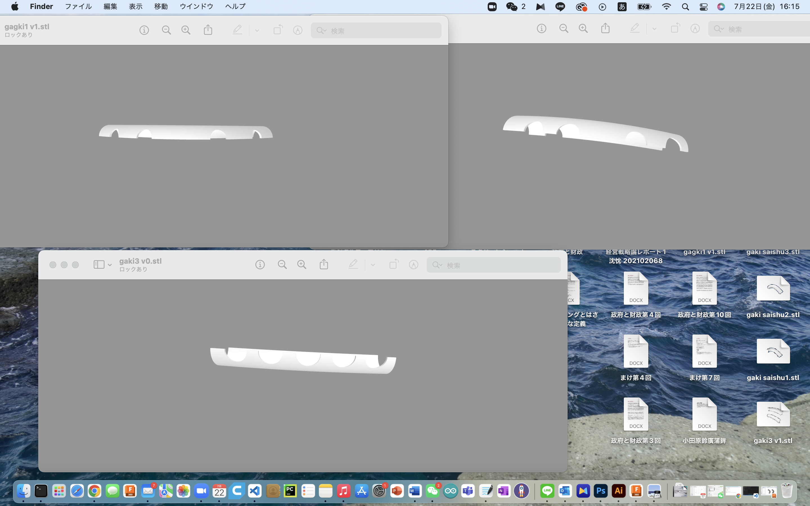
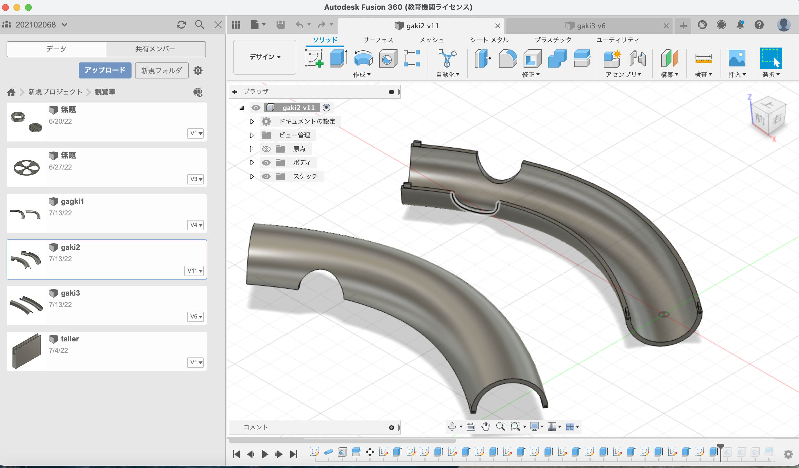
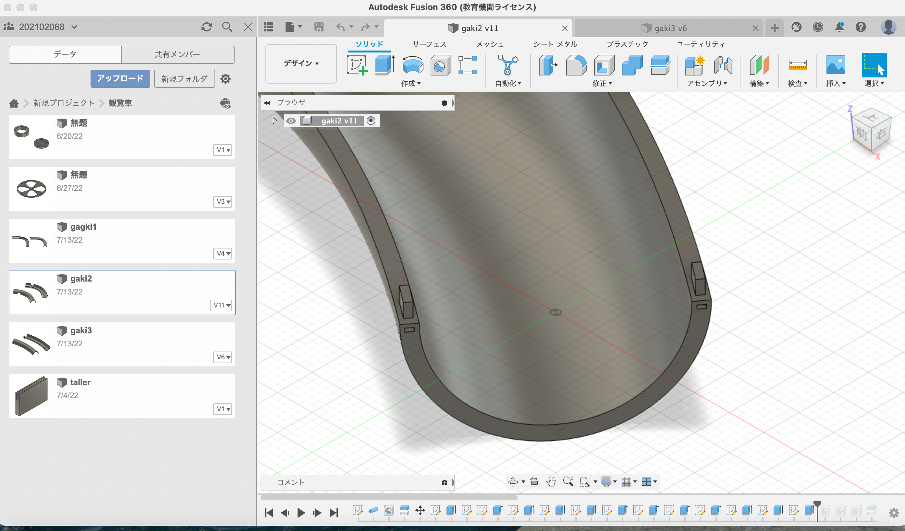
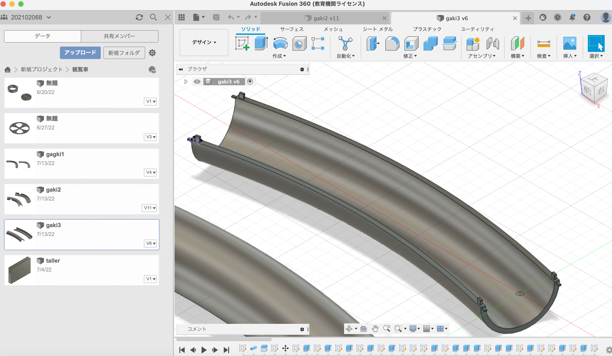
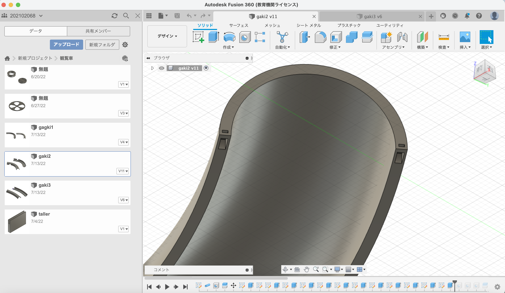

デザインとアイデア発想:全員
プログラミングとマザーボードなど
杉野真央FUSION360で模型を作る:シンシン、服部真恋
パワーポイント:佐藤美優
プレゼンテーション:えーちゃん
特定なプランがないが、みんなで一緒に調子に乗って作った。
最初にみんなでのアイデアによって、最初版のモデルを作った。しかし、当時はまだどうやってそのパイプの上下部分をくっつける方がいいのかと困っていた。
最後までも役に立たなかったやつ

よく考えた後、そのパイプの四角に凸凹を作らせたくてくっ付けられるようにする
また、メンバーたちが検討した後、パイプの穴を減らした。
作成モデル
   具体的にどんな感じなのは最終発表にご覧ください